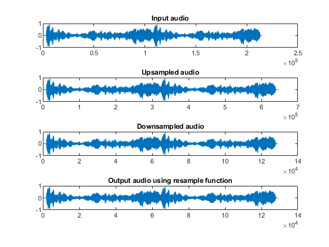

Interpolation and Decimation
Contents
Input the audio signal
audioread signal reads the input audio file which is an ambulance siren in the .wav format. The input audio signal is stored in variable inp_audio. Which is played using the sound function.
[inp_audio,fs]=audioread('sirena_ambulanza.wav');
sound(inp_audio,fs);
Interpolation
Interpolation of a signal is done by upsampling the signal by the factor I.
I=3; %Interpolating factor audio_up=upsample(inp_audio,I); %upsampling the signal fs_u=fs*I; sound(audio_up,fs_u);
Decimation
Decimation of the signal is carried out by downsampling the signal by a factor of D.
D=5; %Decimation factor audio_down=downsample(audio_up,D);%Downsampling the signal fs_d=fs_u/D; sound(audio_down,fs_d);
Using resample function
When sampling rate of signal has to be changed by a factor of I/D, usually, the signal is first upsampled by a factor of I, which is further passed through a low-pass filter( anti-aliasing filter) and then downsampled by a factor of D. This process can be carried out using the function resample which takes in the input audio, interpolating factor and decimating factor to provide the output audio. The result obtained is similar to the one that was obtained previously by upsampling and downsampling separately.
re_audio=resample(inp_audio,I,D); sound(re_audio,fs_d);
Plotting the signals
figure; %title("Sampling rate conversion"); subplot(4,1,1); plot(inp_audio); title("Input audio"); subplot(4,1,2); plot(audio_up); title("Upsampled audio"); subplot(4,1,3);plot(audio_down); title("Downsampled audio"); subplot(4,1,4);plot(re_audio); title("Output audio using resample function");
Conclusion
From the above figure, it is clearly seen that the sampling frequesncy is changing according to upsampling or downsampling. It can also be observed that audio_down and re_audio have same number of samples and appear to be very similar.Only difference is that resample() function makes use of anti-aliasing filter to overcome the delay introduced by upsampling.